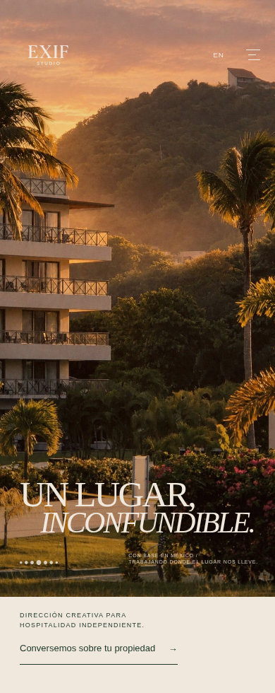

Let the photograph keep the first screen.


390 × 844 photographic viewport, then a 136 px cream invitation strip. The original photograph and headline remain unchanged in both languages. The CTA is deliberately below the first screen; no copy is pushed into the photographic field. The span shown here is not an active link.